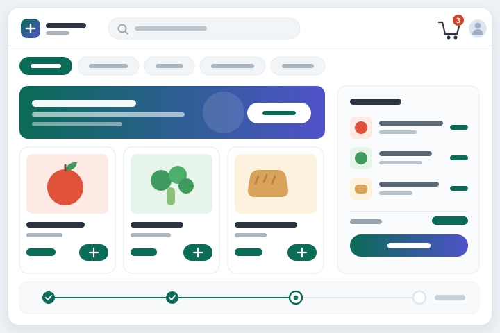

Full Stack Engineer / Java + React
Atanu Das
I build products end to end — Spring Boot services and PostgreSQL behind the API, React and Vite interfaces in front of it, shipped with Docker, AWS, and CI/CD.
- Based in
- Bengaluru, India
- Focus
- Full stack product engineering
- Open to
- Full stack engineering roles
 Java
Java Spring Boot
Spring Boot Hibernate
Hibernate PostgreSQL
PostgreSQL MySQL
MySQL Docker
Docker AWS
AWS Azure
Azure Jenkins
Jenkins Maven
Maven
 React
React JavaScript
JavaScript Vite
Vite HTML5
HTML5 CSS3
CSS3 Git
Git GitHub Actions
GitHub Actions JUnit
JUnit
About
Full stack engineer, from the database to the browser.
I work on production systems where clean APIs, secure access, data consistency, and a usable interface all have to land together. On the backend that means Spring Boot REST services, microservices, PostgreSQL optimization, and JWT/OAuth2. On the frontend it means React components and hooks, JavaScript (ES6+), HTML5 and CSS3, responsive layouts, and Vite tooling — managing UI state and consuming those same APIs. Both sides ship through Docker, AWS, Azure, Jenkins, and GitHub Actions.
Experience
Professional Work
Currently a Software Engineer at Albertsons Companies in Bengaluru, after two years building enterprise backend platforms at GlobalLogic.

Current Work
Digital Commerce Platform
Full stack work on customer-facing grocery commerce — building React interfaces on top of the Spring Boot services that power them.
- Build React components and views in a Vite-based frontend, wired to REST APIs.
- Develop and extend Spring Boot services and their PostgreSQL data models.
- Own features end to end, from API contract through UI state to deployment.
React
JavaScript
Vite
Spring Boot
PostgreSQL
Azure

Work Project
Global P&L Analytics Platform
Developed Spring Boot APIs for a financial reporting platform that replaced Excel-based reporting workflows.
- Built services over large financial datasets and a custom hierarchical data layer.
- Optimized PostgreSQL queries to improve report generation by about 30%.
- Used JWT/OAuth2, Docker, AWS, Jenkins, and GitHub Actions for secure delivery.
Spring Boot
PostgreSQL
Docker
AWS
Jenkins

Work Project
Global ERP Application
Engineered backend modules for a manufacturing ERP system covering production, supply chain, and finance workflows.
- Built Spring Boot microservices and delivered Kanban-related backend modules.
- Handled validation logic, requirements analysis, and release readiness.
- Supported integration testing and critical defect resolution for production stability.
Java
Microservices
JPA
JUnit
Projects
Selected Self Projects
Concise project highlights with repository links for direct code review.

Microservices
Distributed Assessment Platform
Spring Boot microservices platform for quiz creation, question ingestion, scoring, and secured request flows.
Spring Boot
OpenFeign
PostgreSQL
View repository

Full Stack
SkyRoute Flight Booking System
Flight booking platform with flight management, search, filtering, pagination, and seat inventory design — with a React frontend in progress.
Java
Spring Boot
MySQL
React
Vite
View repository
Model Experiment
Self Driving Car Model
Autonomous driving exploration focused on model behavior, control logic, and implementation experiments.
AI/ML
Control Logic
Simulation
View repository
Skills
The stack I use to ship full stack products.
Backend depth in the Java and Spring ecosystem, paired with the React and JavaScript tooling I use on the interface side.
Languages
Java, JavaScript, SQL
Backend
Spring Boot, Spring Security, REST APIs, Microservices, JPA, Hibernate
Frontend
React, JavaScript (ES6+), Vite, HTML5, CSS3, Responsive UI
Database & Cloud
PostgreSQL, MySQL, Docker, AWS EC2, AWS S3, Microsoft Azure
DevOps & Tools
Jenkins, GitHub Actions, Git, Maven, JUnit, JWT, OAuth2, CI/CD